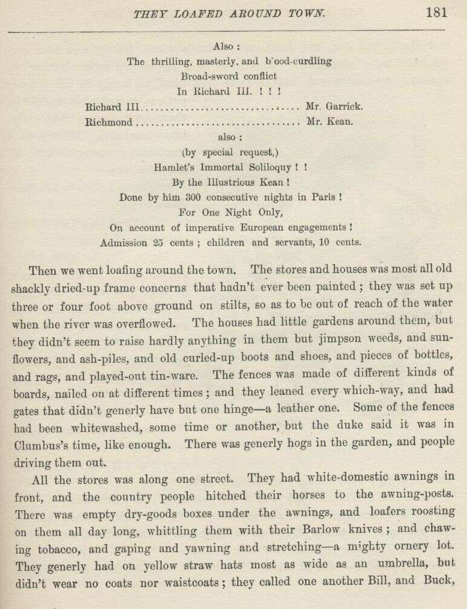

Adventures of Huckleberry Finn

CHAPTER XXI.
IT was after sun-up now, but we went right on and didn't tie up. The king and the
duke turned out by and by looking pretty rusty; but after they'd jumped overboard
and took a swim it chippered them up a good deal. After breakfast the king he took
a seat on the corner of the raft, and pulled off his boots and rolled up his britches,
and let his legs dangle in the water, so as to be comfortable, and lit his pipe, and
went to getting his Romeo and Juliet by heart. When he had got it pretty good him
and the duke begun to practice it together. The duke had to learn him over and over
again how to say every speech; and he made him sigh, and put his hand on his heart,
and after a while he said he done it pretty well; "only," he says, "you mustn't bellow
out Romeo! that way, like a bull—you must say it soft and sick and languishy, so—R-o-o-meo!
that is the idea; for Juliet's a dear sweet mere child of a girl, you know, and she
doesn't bray like a jackass."
Well, next they got out a couple of long swords that the duke made out of oak laths,
and begun to practice the sword fight—the duke called himself Richard III.; and the
way they laid on and pranced around the raft was grand to see. But by and by the
king tripped and fell overboard, and after that they took a rest, and had a talk about
all kinds of adventures they'd had in other times along the river.
After dinner the duke says:
"Well, Capet, we'll want to make this a first-class show, you know, so I guess we'll
add a little more to it. We want a little something to answer encores with, anyway."
"What's onkores, Bilgewater?"
The duke told him, and then says:
"I'll answer by doing the Highland fling or the sailor's hornpipe; and you—well, let
me see—oh, I've got it—you can do Hamlet's soliloquy."
"Hamlet's which?"
"Hamlet's soliloquy, you know; the most celebrated thing in Shakespeare. Ah, it's
sublime, sublime! Always fetches the house. I haven't got it in the book—I've only
got one volume—but I reckon I can piece it out from memory. I'll just walk up and
down a minute, and see if I can call it back from recollection's vaults."
So he went to marching up and down, thinking, and frowning horrible every now and
then; then he would hoist up his eyebrows; next he would squeeze his hand on his forehead
and stagger back and kind of moan; next he would sigh, and next he'd let on to drop
a tear. It was beautiful to see him. By and by he got it. He told us to give attention.
Then he strikes a most noble attitude, with one leg shoved forwards, and his arms
stretched away up, and his head tilted back, looking up at the sky; and then he begins
to rip and rave and grit his teeth; and after that, all through his speech, he howled,
and spread around, and swelled up his chest, and just knocked the spots out of any
acting ever I see before. This is the speech—I learned it, easy enough, while he
was learning it to the king:

To be, or not to be; that is the bare bodkin
That makes calamity of so long life;
For who would fardels bear, till Birnam Wood do come to Dunsinane,
But that the fear of something after death Murders the innocent sleep,
Great nature's second course,
And makes us rather sling the arrows of outrageous fortune
Than fly to others that we know not of.
There's the respect must give us pause:
Wake Duncan with thy knocking! I would thou couldst;
For who would bear the whips and scorns of time,
The oppressor's wrong, the proud man's contumely,
The law's delay, and the quietus which his pangs might take.
In the dead waste and middle of the night, when churchyards yawn
In customary suits of solemn black,
But that the undiscovered country from whose bourne no traveler returns,
Breathes forth contagion on the world,
And thus the native hue of resolution, like the poor cat i' the adage,
Is sicklied o'er with care.
And all the clouds that lowered o'er our housetops,
With this regard their currents turn awry,
And lose the name of action.
'Tis a consummation devoutly to be wished.
But soft you, the fair Ophelia:
Ope not thy ponderous and marble jaws.
But get thee to a nunnery—go!
That makes calamity of so long life;
For who would fardels bear, till Birnam Wood do come to Dunsinane,
But that the fear of something after death Murders the innocent sleep,
Great nature's second course,
And makes us rather sling the arrows of outrageous fortune
Than fly to others that we know not of.
There's the respect must give us pause:
Wake Duncan with thy knocking! I would thou couldst;
For who would bear the whips and scorns of time,
The oppressor's wrong, the proud man's contumely,
The law's delay, and the quietus which his pangs might take.
In the dead waste and middle of the night, when churchyards yawn
In customary suits of solemn black,
But that the undiscovered country from whose bourne no traveler returns,
Breathes forth contagion on the world,
And thus the native hue of resolution, like the poor cat i' the adage,
Is sicklied o'er with care.
And all the clouds that lowered o'er our housetops,
With this regard their currents turn awry,
And lose the name of action.
'Tis a consummation devoutly to be wished.
But soft you, the fair Ophelia:
Ope not thy ponderous and marble jaws.
But get thee to a nunnery—go!
Well, the old man he liked that speech, and he mighty soon got it so he could do it
first rate. It seemed like he was just born for it; and when he had his hand in and
was excited, it was perfectly lovely the way he would rip and tear and rair up behind
when he was getting it off.
The first chance we got, the duke he had some show bills printed; and after that,
for two or three days as we floated along, the raft was a most uncommon lively place,
for there warn't nothing but sword-fighting and rehearsing—as the duke called it—going
on all the time. One morning, when we was pretty well down the State of Arkansaw,
we come in sight of a little one-horse town in a big bend; so we tied up about three-quarters
of a mile above it, in the mouth of a crick which was shut in like a tunnel by the
cypress trees, and all of us but Jim took the canoe and went down there to see if
there was any chance in that place for our show.
We struck it mighty lucky; there was going to be a circus there that afternoon, and
the country people was already beginning to come in, in all kinds of old shackly wagons,
and on horses. The circus would leave before night, so our show would have a pretty
good chance. The duke he hired the court house, and we went around and stuck up our
bills. They read like this:
Shaksperean Revival!!!
Wonderful Attraction!
For One Night Only! The world renowned tragedians,
David Garrick the younger, of Drury Lane Theatre, London,
and
Edmund Kean the elder, of the Royal Haymarket Theatre, Whitechapel,
Pudding Lane, Piccadilly, London, and the Royal Continental Theatres, in
their sublime Shaksperean Spectacle entitled The Balcony Scene in
Romeo and Juliet!!!
Romeo...................................... Mr. Garrick.
Juliet..................................... Mr. Kean.
Assisted by the whole strength of the company!
New costumes, new scenery, new appointments!
Also:
The thrilling, masterly, and blood-curdling Broad-sword conflict In
Richard III.!!!
Richard III................................ Mr. Garrick.
Richmond................................... Mr. Kean.
also:
(by special request,)
Hamlet's Immortal Soliloquy!!
By the Illustrious Kean!
Done by him 300 consecutive nights in Paris!
For One Night Only,
On account of imperative European engagements!
Admission 25 cents; children and servants, 10 cents.
Wonderful Attraction!
For One Night Only! The world renowned tragedians,
David Garrick the younger, of Drury Lane Theatre, London,
and
Edmund Kean the elder, of the Royal Haymarket Theatre, Whitechapel,
Pudding Lane, Piccadilly, London, and the Royal Continental Theatres, in
their sublime Shaksperean Spectacle entitled The Balcony Scene in
Romeo and Juliet!!!
Romeo...................................... Mr. Garrick.
Juliet..................................... Mr. Kean.
Assisted by the whole strength of the company!
New costumes, new scenery, new appointments!
Also:
The thrilling, masterly, and blood-curdling Broad-sword conflict In
Richard III.!!!
Richard III................................ Mr. Garrick.
Richmond................................... Mr. Kean.
also:
(by special request,)
Hamlet's Immortal Soliloquy!!
By the Illustrious Kean!
Done by him 300 consecutive nights in Paris!
For One Night Only,
On account of imperative European engagements!
Admission 25 cents; children and servants, 10 cents.
Then we went loafing around the town. The stores and houses was most all old shackly
dried-up frame concerns that hadn't ever been painted; they was set up three or four
foot above ground on stilts, so as to be out of reach of the water when the river
was overflowed. The houses had little gardens around them, but they didn't seem to
raise hardly anything in them but jimpson weeds, and sunflowers, and ash-piles, and
old curled-up boots and shoes, and pieces of bottles, and rags, and played-out tin-ware.
The fences was made of different kinds of boards, nailed on at different times; and
they leaned every which-way, and had gates that didn't generly have but one hinge—a
leather one. Some of the fences had been whitewashed, some time or another, but the
duke said it was in Clumbus's time, like enough. There was generly hogs in the garden,
and people driving them out.
All the stores was along one street. They had white domestic awnings in front, and
the country people hitched their horses to the awning-posts. There was empty drygoods
boxes under the awnings, and loafers roosting on them all day long, whittling them
with their Barlow knives; and chawing tobacco, and gaping and yawning and stretching—a
mighty ornery lot. They generly had on yellow straw hats most as wide as an umbrella,
but didn't wear no coats nor waistcoats, they called one another Bill, and Buck, and
Hank, and Joe, and Andy, and talked lazy and drawly, and used considerable many cuss
words. There was as many as one loafer leaning up against every awning-post, and
he most always had his hands in his britches-pockets, except when he fetched them
out to lend a chaw of tobacco or scratch. What a body was hearing amongst them all
the time was:
"Gimme a chaw 'v tobacker, Hank."
"Cain't; I hain't got but one chaw left. Ask Bill."
Maybe Bill he gives him a chaw; maybe he lies and says he ain't got none. Some of
them kinds of loafers never has a cent in the world, nor a chaw of tobacco of their
own. They get all their chawing by borrowing; they say to a fellow, "I wisht you'd
len' me a chaw, Jack, I jist this minute give Ben Thompson the last chaw I had"—which
is a lie pretty much everytime; it don't fool nobody but a stranger; but Jack ain't
no stranger, so he says:
"You give him a chaw, did you? So did your sister's cat's grandmother. You pay me back
the chaws you've awready borry'd off'n me, Lafe Buckner, then I'll loan you one or
two ton of it, and won't charge you no back intrust, nuther."
"Well, I did pay you back some of it wunst."
"Yes, you did—'bout six chaws. You borry'd store tobacker and paid back nigger-head."
Store tobacco is flat black plug, but these fellows mostly chaws the natural leaf
twisted. When they borrow a chaw they don't generly cut it off with a knife, but
set the plug in between their teeth, and gnaw with their teeth and tug at the plug
with their hands till they get it in two; then sometimes the one that owns the tobacco
looks mournful at it when it's handed back, and says, sarcastic:
"Here, gimme the chaw, and you take the plug."
All the streets and lanes was just mud; they warn't nothing else but mud—mud as black as tar and nigh about a foot deep in some places, and two or three
inches deep in all the places. The hogs loafed and grunted around everywheres. You'd see a muddy sow
and a litter of pigs come lazying along the street and whollop herself right down
in the way, where folks had to walk around her, and she'd stretch out and shut her
eyes and wave her ears whilst the pigs was milking her, and look as happy as if she
was on salary. And pretty soon you'd hear a loafer sing out, "Hi! so boy! sick him, Tige!" and away the sow would go, squealing most horrible, with a
dog or two swinging to each ear, and three or four dozen more a-coming; and then you
would see all the loafers get up and watch the thing out of sight, and laugh at the
fun and look grateful for the noise. Then they'd settle back again till there was
a dog fight. There couldn't anything wake them up all over, and make them happy all
over, like a dog fight—unless it might be putting turpentine on a stray dog and setting
fire to him, or tying a tin pan to his tail and see him run himself to death.
On the river front some of the houses was sticking out over the bank, and they was
bowed and bent, and about ready to tumble in. The people had moved out of them. The
bank was caved away under one corner of some others, and that corner was hanging over.
People lived in them yet, but it was dangersome, because sometimes a strip of land
as wide as a house caves in at a time. Sometimes a belt of land a quarter of a mile
deep will start in and cave along and cave along till it all caves into the river
in one summer. Such a town as that has to be always moving back, and back, and back,
because the river's always gnawing at it.
The nearer it got to noon that day the thicker and thicker was the wagons and horses
in the streets, and more coming all the time. Families fetched their dinners with
them from the country, and eat them in the wagons. There was considerable whisky
drinking going on, and I seen three fights. By and by somebody sings out:
"Here comes old Boggs!—in from the country for his little old monthly drunk; here
he comes, boys!"
All the loafers looked glad; I reckoned they was used to having fun out of Boggs.
One of them says:
"Wonder who he's a-gwyne to chaw up this time. If he'd a-chawed up all the men he's
ben a-gwyne to chaw up in the last twenty year he'd have considerable ruputation now."
Another one says, "I wisht old Boggs 'd threaten me, 'cuz then I'd know I warn't gwyne
to die for a thousan' year."
Boggs comes a-tearing along on his horse, whooping and yelling like an Injun, and
singing out:
"Cler the track, thar. I'm on the waw-path, and the price uv coffins is a-gwyne to
raise."
He was drunk, and weaving about in his saddle; he was over fifty year old, and had
a very red face. Everybody yelled at him and laughed at him and sassed him, and he
sassed back, and said he'd attend to them and lay them out in their regular turns,
but he couldn't wait now because he'd come to town to kill old Colonel Sherburn, and
his motto was, "Meat first, and spoon vittles to top off on."
He see me, and rode up and says:
"Whar'd you come f'm, boy? You prepared to die?"
Then he rode on. I was scared, but a man says:
"He don't mean nothing; he's always a-carryin' on like that when he's drunk. He's
the best naturedest old fool in Arkansaw—never hurt nobody, drunk nor sober."
Boggs rode up before the biggest store in town, and bent his head down so he could
see under the curtain of the awning and yells:
"Come out here, Sherburn! Come out and meet the man you've swindled. You're the houn'
I'm after, and I'm a-gwyne to have you, too!"
And so he went on, calling Sherburn everything he could lay his tongue to, and the
whole street packed with people listening and laughing and going on. By and by a
proud-looking man about fifty-five—and he was a heap the best dressed man in that
town, too—steps out of the store, and the crowd drops back on each side to let him
come. He says to Boggs, mighty ca'm and slow—he says:
"I'm tired of this, but I'll endure it till one o'clock. Till one o'clock, mind—no
longer. If you open your mouth against me only once after that time you can't travel
so far but I will find you."
Then he turns and goes in. The crowd looked mighty sober; nobody stirred, and there
warn't no more laughing. Boggs rode off blackguarding Sherburn as loud as he could
yell, all down the street; and pretty soon back he comes and stops before the store,
still keeping it up. Some men crowded around him and tried to get him to shut up,
but he wouldn't; they told him it would be one o'clock in about fifteen minutes, and
so he must go home—he must go right away. But it didn't do no good. He cussed away with all
his might, and throwed his hat down in the mud and rode over it, and pretty soon away
he went a-raging down the street again, with his gray hair a-flying. Everybody that
could get a chance at him tried their best to coax him off of his horse so they could
lock him up and get him sober; but it warn't no use—up the street he would tear again,
and give Sherburn another cussing. By and by somebody says:
"Go for his daughter!—quick, go for his daughter; sometimes he'll listen to her. If
anybody can persuade him, she can."
So somebody started on a run. I walked down street a ways and stopped. In about five
or ten minutes here comes Boggs again, but not on his horse. He was a-reeling across
the street towards me, bare-headed, with a friend on both sides of him a-holt of his
arms and hurrying him along. He was quiet, and looked uneasy; and he warn't hanging
back any, but was doing some of the hurrying himself. Somebody sings out:
"Boggs!"
I looked over there to see who said it, and it was that Colonel Sherburn. He was standing
perfectly still in the street, and had a pistol raised in his right hand—not aiming
it, but holding it out with the barrel tilted up towards the sky. The same second
I see a young girl coming on the run, and two men with her. Boggs and the men turned
round to see who called him, and when they see the pistol the men jumped to one side,
and the pistol-barrel come down slow and steady to a level—both barrels cocked. Boggs
throws up both of his hands and says, "O Lord, don't shoot!" Bang! goes the first
shot, and he staggers back, clawing at the air—bang! goes the second one, and he tumbles
backwards on to the ground, heavy and solid, with his arms spread out. That young
girl screamed out and comes rushing, and down she throws herself on her father, crying,
and saying, "Oh, he's killed him, he's killed him!" The crowd closed up around them,
and shouldered and jammed one another, with their necks stretched, trying to see,
and people on the inside trying to shove them back and shouting, "Back, back! give
him air, give him air!"
Colonel Sherburn he tossed his pistol on to the ground, and turned around on his heels
and walked off.
They took Boggs to a little drug store, the crowd pressing around just the same, and
the whole town following, and I rushed and got a good place at the window, where I
was close to him and could see in. They laid him on the floor and put one large Bible
under his head, and opened another one and spread it on his breast; but they tore
open his shirt first, and I seen where one of the bullets went in. He made about
a dozen long gasps, his breast lifting the Bible up when he drawed in his breath,
and letting it down again when he breathed it out—and after that he laid still; he
was dead. Then they pulled his daughter away from him, screaming and crying, and
took her off. She was about sixteen, and very sweet and gentle looking, but awful
pale and scared.
Well, pretty soon the whole town was there, squirming and scrouging and pushing and
shoving to get at the window and have a look, but people that had the places wouldn't
give them up, and folks behind them was saying all the time, "Say, now, you've looked
enough, you fellows; 'tain't right and 'tain't fair for you to stay thar all the time,
and never give nobody a chance; other folks has their rights as well as you."
There was considerable jawing back, so I slid out, thinking maybe there was going
to be trouble. The streets was full, and everybody was excited. Everybody that seen
the shooting was telling how it happened, and there was a big crowd packed around
each one of these fellows, stretching their necks and listening. One long, lanky
man, with long hair and a big white fur stovepipe hat on the back of his head, and
a crooked-handled cane, marked out the places on the ground where Boggs stood and
where Sherburn stood, and the people following him around from one place to t'other
and watching everything he done, and bobbing their heads to show they understood,
and stooping a little and resting their hands on their thighs to watch him mark the
places on the ground with his cane; and then he stood up straight and stiff where
Sherburn had stood, frowning and having his hat-brim down over his eyes, and sung
out, "Boggs!" and then fetched his cane down slow to a level, and says "Bang!" staggered
backwards, says "Bang!" again, and fell down flat on his back. The people that had
seen the thing said he done it perfect; said it was just exactly the way it all happened.
Then as much as a dozen people got out their bottles and treated him.
Well, by and by somebody said Sherburn ought to be lynched. In about a minute everybody
was saying it; so away they went, mad and yelling, and snatching down every clothes-line
they come to to do the hanging with.
CHAPTER XXII.
THEY swarmed up towards Sherburn's house, a-whooping and raging like Injuns, and everything
had to clear the way or get run over and tromped to mush, and it was awful to see.
Children was heeling it ahead of the mob, screaming and trying to get out of the
way; and every window along the road was full of women's heads, and there was nigger
boys in every tree, and bucks and wenches looking over every fence; and as soon as
the mob would get nearly to them they would break and skaddle back out of reach. Lots
of the women and girls was crying and taking on, scared most to death.
They swarmed up in front of Sherburn's palings as thick as they could jam together,
and you couldn't hear yourself think for the noise. It was a little twenty-foot yard.
Some sung out "Tear down the fence! tear down the fence!" Then there was a racket
of ripping and tearing and smashing, and down she goes, and the front wall of the
crowd begins to roll in like a wave.
Just then Sherburn steps out on to the roof of his little front porch, with a double-barrel
gun in his hand, and takes his stand, perfectly ca'm and deliberate, not saying a
word. The racket stopped, and the wave sucked back.
Sherburn never said a word—just stood there, looking down. The stillness was awful
creepy and uncomfortable. Sherburn run his eye slow along the crowd; and wherever
it struck the people tried a little to out-gaze him, but they couldn't; they dropped
their eyes and looked sneaky. Then pretty soon Sherburn sort of laughed; not the pleasant
kind, but the kind that makes you feel like when you are eating bread that's got sand
in it.
Then he says, slow and scornful:
"The idea of you lynching anybody! It's amusing. The idea of you thinking you had pluck enough to
lynch a man! Because you're brave enough to tar and feather poor friendless cast-out women that
come along here, did that make you think you had grit enough to lay your hands on
a man? Why, a man's safe in the hands of ten thousand of your kind—as long as it's daytime and you're
not behind him.
"Do I know you? I know you clear through. I was born and raised in the South, and
I've lived in the North; so I know the average all around. The average man's a coward.
In the North he lets anybody walk over him that wants to, and goes home and prays
for a humble spirit to bear it. In the South one man all by himself, has stopped a
stage full of men in the daytime, and robbed the lot. Your newspapers call you a
brave people so much that you think you are braver than any other people—whereas you're
just as brave, and no braver. Why don't your juries hang murderers? Because they're afraid
the man's friends will shoot them in the back, in the dark—and it's just what they
would do.
"So they always acquit; and then a man goes in the night, with a hundred masked cowards at his back and lynches the rascal.
Your mistake is, that you didn't bring a man with you; that's one mistake, and the
other is that you didn't come in the dark and fetch your masks. You brought part of a man—Buck Harkness, there—and if you hadn't had him to start you, you'd a taken
it out in blowing.
"You didn't want to come. The average man don't like trouble and danger. You don't like trouble and danger. But if only half a man—like Buck Harkness, there—shouts 'Lynch him! lynch him!' you're afraid to back
down—afraid you'll be found out to be what you are—cowards—and so you raise a yell, and hang yourselves on to that half-a-man's coat-tail, and
come raging up here, swearing what big things you're going to do. The pitifulest thing
out is a mob; that's what an army is—a mob; they don't fight with courage that's born
in them, but with courage that's borrowed from their mass, and from their officers.
But a mob without any man at the head of it is beneath pitifulness. Now the thing for you to do is to droop your tails and go home and crawl in a hole. If any real lynching's
going to be done it will be done in the dark, Southern fashion; and when they come
they'll bring their masks, and fetch a man along. Now leave—and take your half-a-man with you"—tossing his gun up across his left arm and cocking
it when he says this.
The crowd washed back sudden, and then broke all apart, and went tearing off every
which way, and Buck Harkness he heeled it after them, looking tolerable cheap. I
could a stayed if I wanted to, but I didn't want to.
I went to the circus and loafed around the back side till the watchman went by, and
then dived in under the tent. I had my twenty-dollar gold piece and some other money,
but I reckoned I better save it, because there ain't no telling how soon you are going
to need it, away from home and amongst strangers that way. You can't be too careful.
I ain't opposed to spending money on circuses when there ain't no other way, but
there ain't no use in wasting it on them.
It was a real bully circus. It was the splendidest sight that ever was when they
all come riding in, two and two, a gentleman and lady, side by side, the men just
in their drawers and undershirts, and no shoes nor stirrups, and resting their hands
on their thighs easy and comfortable—there must a been twenty of them—and every lady
with a lovely complexion, and perfectly beautiful, and looking just like a gang of
real sure-enough queens, and dressed in clothes that cost millions of dollars, and
just littered with diamonds. It was a powerful fine sight; I never see anything so
lovely. And then one by one they got up and stood, and went a-weaving around the
ring so gentle and wavy and graceful, the men looking ever so tall and airy and straight,
with their heads bobbing and skimming along, away up there under the tent-roof, and
every lady's rose-leafy dress flapping soft and silky around her hips, and she looking
like the most loveliest parasol.
And then faster and faster they went, all of them dancing, first one foot out in the
air and then the other, the horses leaning more and more, and the ringmaster going
round and round the center-pole, cracking his whip and shouting "Hi!—hi!" and the
clown cracking jokes behind him; and by and by all hands dropped the reins, and every
lady put her knuckles on her hips and every gentleman folded his arms, and then how
the horses did lean over and hump themselves! And so one after the other they all
skipped off into the ring, and made the sweetest bow I ever see, and then scampered
out, and everybody clapped their hands and went just about wild.
Well, all through the circus they done the most astonishing things; and all the time
that clown carried on so it most killed the people. The ringmaster couldn't ever
say a word to him but he was back at him quick as a wink with the funniest things
a body ever said; and how he ever could think of so many of them, and so sudden and so pat, was what I couldn't noway understand.
Why, I couldn't a thought of them in a year. And by and by a drunk man tried to get
into the ring—said he wanted to ride; said he could ride as well as anybody that ever
was. They argued and tried to keep him out, but he wouldn't listen, and the whole
show come to a standstill. Then the people begun to holler at him and make fun of
him, and that made him mad, and he begun to rip and tear; so that stirred up the people,
and a lot of men begun to pile down off of the benches and swarm towards the ring,
saying, "Knock him down! throw him out!" and one or two women begun to scream. So,
then, the ringmaster he made a little speech, and said he hoped there wouldn't be
no disturbance, and if the man would promise he wouldn't make no more trouble he would
let him ride if he thought he could stay on the horse. So everybody laughed and said
all right, and the man got on. The minute he was on, the horse begun to rip and tear
and jump and cavort around, with two circus men hanging on to his bridle trying to
hold him, and the drunk man hanging on to his neck, and his heels flying in the air
every jump, and the whole crowd of people standing up shouting and laughing till tears
rolled down. And at last, sure enough, all the circus men could do, the horse broke
loose, and away he went like the very nation, round and round the ring, with that
sot laying down on him and hanging to his neck, with first one leg hanging most to
the ground on one side, and then t'other one on t'other side, and the people just
crazy. It warn't funny to me, though; I was all of a tremble to see his danger. But
pretty soon he struggled up astraddle and grabbed the bridle, a-reeling this way and
that; and the next minute he sprung up and dropped the bridle and stood! and the horse
a-going like a house afire too. He just stood up there, a-sailing around as easy
and comfortable as if he warn't ever drunk in his life—and then he begun to pull off
his clothes and sling them. He shed them so thick they kind of clogged up the air,
and altogether he shed seventeen suits. And, then, there he was, slim and handsome,
and dressed the gaudiest and prettiest you ever saw, and he lit into that horse with
his whip and made him fairly hum—and finally skipped off, and made his bow and danced
off to the dressing-room, and everybody just a-howling with pleasure and astonishment.
Then the ringmaster he see how he had been fooled, and he was the sickest ringmaster you ever see, I reckon. Why, it was one of his own men! He
had got up that joke all out of his own head, and never let on to nobody. Well, I
felt sheepish enough to be took in so, but I wouldn't a been in that ringmaster's
place, not for a thousand dollars. I don't know; there may be bullier circuses than
what that one was, but I never struck them yet. Anyways, it was plenty good enough
for me; and wherever I run across it, it can have all of my custom every time.
Well, that night we had our show; but there warn't only about twelve people there—just enough to pay expenses.
And they laughed all the time, and that made the duke mad; and everybody left, anyway,
before the show was over, but one boy which was asleep. So the duke said these Arkansaw
lunkheads couldn't come up to Shakespeare; what they wanted was low comedy—and maybe
something ruther worse than low comedy, he reckoned. He said he could size their
style. So next morning he got some big sheets of wrapping paper and some black paint,
and drawed off some handbills, and stuck them up all over the village. The bills
said:
CHAPTER XXIII.
WELL, all day him and the king was hard at it, rigging up a stage and a curtain and
a row of candles for footlights; and that night the house was jam full of men in no
time. When the place couldn't hold no more, the duke he quit tending door and went
around the back way and come on to the stage and stood up before the curtain and made
a little speech, and praised up this tragedy, and said it was the most thrillingest
one that ever was; and so he went on a-bragging about the tragedy, and about Edmund
Kean the Elder, which was to play the main principal part in it; and at last when
he'd got everybody's expectations up high enough, he rolled up the curtain, and the
next minute the king come a-prancing out on all fours, naked; and he was painted all
over, ring-streaked-and-striped, all sorts of colors, as splendid as a rainbow. And—but
never mind the rest of his outfit; it was just wild, but it was awful funny. The people
most killed themselves laughing; and when the king got done capering and capered off
behind the scenes, they roared and clapped and stormed and haw-hawed till he come
back and done it over again, and after that they made him do it another time. Well,
it would make a cow laugh to see the shines that old idiot cut.
Then the duke he lets the curtain down, and bows to the people, and says the great
tragedy will be performed only two nights more, on accounts of pressing London engagements,
where the seats is all sold already for it in Drury Lane; and then he makes them another
bow, and says if he has succeeded in pleasing them and instructing them, he will be
deeply obleeged if they will mention it to their friends and get them to come and
see it.
Twenty people sings out:
"What, is it over? Is that all?"
The duke says yes. Then there was a fine time. Everybody sings out, "Sold!" and
rose up mad, and was a-going for that stage and them tragedians. But a big, fine
looking man jumps up on a bench and shouts:
"Hold on! Just a word, gentlemen." They stopped to listen. "We are sold—mighty
badly sold. But we don't want to be the laughing stock of this whole town, I reckon,
and never hear the last of this thing as long as we live. No. What we want is to go out of here quiet, and talk this show up, and sell the rest of the town! Then we'll all be in the same boat. Ain't that sensible?" ("You bet
it is!—the jedge is right!" everybody sings out.) "All right, then—not a word about
any sell. Go along home, and advise everybody to come and see the tragedy."
Next day you couldn't hear nothing around that town but how splendid that show was.
House was jammed again that night, and we sold this crowd the same way. When me
and the king and the duke got home to the raft we all had a supper; and by and by,
about midnight, they made Jim and me back her out and float her down the middle of
the river, and fetch her in and hide her about two mile below town.
The third night the house was crammed again—and they warn't new-comers this time,
but people that was at the show the other two nights. I stood by the duke at the
door, and I see that every man that went in had his pockets bulging, or something
muffled up under his coat—and I see it warn't no perfumery, neither, not by a long
sight. I smelt sickly eggs by the barrel, and rotten cabbages, and such things; and
if I know the signs of a dead cat being around, and I bet I do, there was sixty-four
of them went in. I shoved in there for a minute, but it was too various for me; I
couldn't stand it. Well, when the place couldn't hold no more people the duke he
give a fellow a quarter and told him to tend door for him a minute, and then he started
around for the stage door, I after him; but the minute we turned the corner and was
in the dark he says:
"Walk fast now till you get away from the houses, and then shin for the raft like
the dickens was after you!"
I done it, and he done the same. We struck the raft at the same time, and in less
than two seconds we was gliding down stream, all dark and still, and edging towards
the middle of the river, nobody saying a word. I reckoned the poor king was in for
a gaudy time of it with the audience, but nothing of the sort; pretty soon he crawls
out from under the wigwam, and says:
"Well, how'd the old thing pan out this time, duke?" He hadn't been up-town at all.
We never showed a light till we was about ten mile below the village. Then we lit
up and had a supper, and the king and the duke fairly laughed their bones loose over
the way they'd served them people. The duke says:
"Greenhorns, flatheads! I knew the first house would keep mum and let the rest of
the town get roped in; and I knew they'd lay for us the third night, and consider
it was their turn now. Well, it is their turn, and I'd give something to know how much they'd take for it. I would just like to know how they're putting in their opportunity. They can turn it into
a picnic if they want to—they brought plenty provisions."
Them rapscallions took in four hundred and sixty-five dollars in that three nights.
I never see money hauled in by the wagon-load like that before. By and by, when
they was asleep and snoring, Jim says:
"Don't it s'prise you de way dem kings carries on, Huck?"
"No," I says, "it don't."
"Why don't it, Huck?"
"Well, it don't, because it's in the breed. I reckon they're all alike."
"But, Huck, dese kings o' ourn is reglar rapscallions; dat's jist what dey is; dey's
reglar rapscallions."
"Well, that's what I'm a-saying; all kings is mostly rapscallions, as fur as I can
make out."
"Is dat so?"
"You read about them once—you'll see. Look at Henry the Eight; this 'n 's a Sunday-school
Superintendent to him. And look at Charles Second, and Louis Fourteen, and Louis Fifteen, and James Second,
and Edward Second, and Richard Third, and forty more; besides all them Saxon heptarchies
that used to rip around so in old times and raise Cain. My, you ought to seen old
Henry the Eight when he was in bloom. He was a blossom. He used to marry a new wife every day, and chop off her head next morning.
And he would do it just as indifferent as if he was ordering up eggs. 'Fetch up
Nell Gwynn,' he says. They fetch her up. Next morning, 'Chop off her head!' And
they chop it off. 'Fetch up Jane Shore,' he says; and up she comes, Next morning,
'Chop off her head'—and they chop it off. 'Ring up Fair Rosamun.' Fair Rosamun answers
the bell. Next morning, 'Chop off her head.' And he made every one of them tell
him a tale every night; and he kept that up till he had hogged a thousand and one
tales that way, and then he put them all in a book, and called it Domesday Book—which
was a good name and stated the case. You don't know kings, Jim, but I know them;
and this old rip of ourn is one of the cleanest I've struck in history. Well, Henry
he takes a notion he wants to get up some trouble with this country. How does he go
at it—give notice?—give the country a show? No. All of a sudden he heaves all the
tea in Boston Harbor overboard, and whacks out a declaration of independence, and
dares them to come on. That was his style—he never give anybody a chance. He had suspicions of his father, the Duke
of Wellington. Well, what did he do? Ask him to show up? No—drownded him in a butt
of mamsey, like a cat. S'pose people left money laying around where he was—what did
he do? He collared it. S'pose he contracted to do a thing, and you paid him, and
didn't set down there and see that he done it—what did he do? He always done the
other thing. S'pose he opened his mouth—what then? If he didn't shut it up powerful
quick he'd lose a lie every time. That's the kind of a bug Henry was; and if we'd
a had him along 'stead of our kings he'd a fooled that town a heap worse than ourn
done. I don't say that ourn is lambs, because they ain't, when you come right down
to the cold facts; but they ain't nothing to that old ram, anyway. All I say is, kings is kings, and you got to make allowances. Take
them all around, they're a mighty ornery lot. It's the way they're raised."
"But dis one do smell so like de nation, Huck."
"Well, they all do, Jim. We can't help the way a king smells; history don't tell
no way."
"Now de duke, he's a tolerble likely man in some ways."
"Yes, a duke's different. But not very different. This one's a middling hard lot
for a duke. When he's drunk there ain't no near-sighted man could tell him from a
king."
"Well, anyways, I doan' hanker for no mo' un um, Huck. Dese is all I kin stan'."
"It's the way I feel, too, Jim. But we've got them on our hands, and we got to remember
what they are, and make allowances. Sometimes I wish we could hear of a country that's
out of kings."
What was the use to tell Jim these warn't real kings and dukes? It wouldn't a done
no good; and, besides, it was just as I said: you couldn't tell them from the real
kind.
I went to sleep, and Jim didn't call me when it was my turn. He often done that.
When I waked up just at daybreak he was sitting there with his head down betwixt
his knees, moaning and mourning to himself. I didn't take notice nor let on. I knowed
what it was about. He was thinking about his wife and his children, away up yonder,
and he was low and homesick; because he hadn't ever been away from home before in
his life; and I do believe he cared just as much for his people as white folks does
for their'n. It don't seem natural, but I reckon it's so. He was often moaning and
mourning that way nights, when he judged I was asleep, and saying, "Po' little 'Lizabeth!
po' little Johnny! it's mighty hard; I spec' I ain't ever gwyne to see you no mo',
no mo'!" He was a mighty good nigger, Jim was.
But this time I somehow got to talking to him about his wife and young ones; and by
and by he says:
"What makes me feel so bad dis time 'uz bekase I hear sumpn over yonder on de bank
like a whack, er a slam, while ago, en it mine me er de time I treat my little 'Lizabeth
so ornery. She warn't on'y 'bout fo' year ole, en she tuck de sk'yarlet fever, en
had a powful rough spell; but she got well, en one day she was a-stannin' aroun',
en I says to her, I says:
"'Shet de do'.'
"She never done it; jis' stood dah, kiner smilin' up at me. It make me mad; en I
says agin, mighty loud, I says:
"'Doan' you hear me? Shet de do'!'
"She jis stood de same way, kiner smilin' up. I was a-bilin'! I says:
"'I lay I make you mine!'
"En wid dat I fetch' her a slap side de head dat sont her a-sprawlin'. Den I went
into de yuther room, en 'uz gone 'bout ten minutes; en when I come back dah was dat
do' a-stannin' open yit, en dat chile stannin' mos' right in it, a-lookin' down and mournin', en de tears
runnin' down. My, but I wuz mad! I was a-gwyne for de chile, but jis' den—it was a do' dat open innerds—jis'
den, 'long come de wind en slam it to, behine de chile, ker-BLAM!—en my lan', de chile
never move'! My breff mos' hop outer me; en I feel so—so—I doan' know HOW I feel.
I crope out, all a-tremblin', en crope aroun' en open de do' easy en slow, en poke
my head in behine de chile, sof' en still, en all uv a sudden I says POW! jis' as
loud as I could yell. She never budge! Oh, Huck, I bust out a-cryin' en grab her up in my arms, en say, 'Oh, de po' little
thing! De Lord God Amighty fogive po' ole Jim, kaze he never gwyne to fogive hisself
as long's he live!' Oh, she was plumb deef en dumb, Huck, plumb deef en dumb—en I'd
ben a-treat'n her so!"